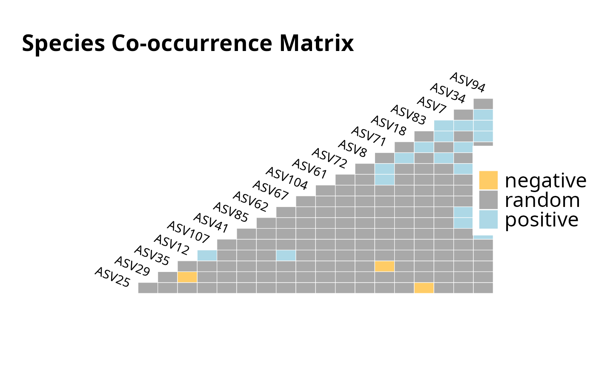

Probabilistic species co-occurrence from a phyloseq object
Source:R/cooccurrence_network_pq.R
cooccurrence_network_pq.Rd![[Experimental]](figures/lifecycle-experimental.svg)
Compute the probabilistic species co-occurrence model of Veech (2013) on
the taxa of a phyloseq object using cooccur::cooccur(). Each pair of
taxa is classified as positively associated, negatively associated or
randomly associated given the observed co-occurrence across samples.
By default the OTU table is converted to presence/absence with
MiscMetabar::as_binary_otu_table() before the analysis: cooccur is a
binary (incidence) model and gives spurious results on raw abundance data.
Usage
cooccurrence_network_pq(
physeq,
binary = TRUE,
n_taxa = NULL,
spp_names = TRUE,
prob = "comb",
thresh = TRUE,
...
)Arguments
- physeq
(required) A
phyloseq-classobject obtained using thephyloseqpackage.- binary
(logical, default TRUE) Convert the OTU table to presence/absence before the analysis. Keep TRUE unless you know your data suit the (rarely appropriate) abundance behaviour of
cooccur.- n_taxa
(int, default NULL) If set, keep only the
n_taxamost prevalent taxa before the analysis.cooccurscales quadratically with the number of taxa, so capping is recommended on rich datasets.- spp_names
(logical, default TRUE) Passed to
cooccur::cooccur(): keep taxa names in the output.- prob
(default "comb") The probability method passed to
cooccur::cooccur(), either "comb" (combinatorics) or "hyper" (hypergeometric).- thresh
(logical, default TRUE) Passed to
cooccur::cooccur(): remove taxa pairs expected to co-occur less than one time.- ...
Other parameters passed on to
cooccur::cooccur().
Value
An object of class cooccur (see cooccur::cooccur()). Use
cooccur::effect.sizes(), cooccur::prob.table() or summary() to
explore it, and plot() to visualise the association matrix.
References
Veech, J. A. (2013) A probabilistic model for analysing species co-occurrence. doi:10.1111/j.1466-8238.2012.00789.x .
Examples
if (requireNamespace("cooccur", quietly = TRUE)) {
res <- cooccurrence_network_pq(data_fungi_mini, n_taxa = 30)
summary(res)
plot(res)
}
#>
|
| | 0%
|
| | 1%
|
|= | 1%
|
|= | 2%
|
|== | 2%
|
|== | 3%
|
|=== | 4%
|
|=== | 5%
|
|==== | 5%
|
|==== | 6%
|
|===== | 6%
|
| | 0%
|
|========= | 14%
|
|========== | 14%
|
|========== | 15%
|
|=========== | 15%
|
|=========== | 16%
|
|============ | 17%
|
|============= | 18%
|
|============= | 19%
|
|============== | 20%
|
|============== | 21%
|
|=============== | 21%
|
|=============== | 22%
|
|================ | 22%
|
|================ | 23%
|
|================= | 24%
|
|================= | 25%
|
|================== | 25%
|
|================== | 26%
|
|=================== | 27%
|
|=================== | 28%
|
|==================== | 28%
|
|==================== | 29%
|
|===================== | 30%
|
|===================== | 31%
|
|====================== | 31%
|
|====================== | 32%
|
|======================= | 32%
|
|======================= | 33%
|
|======================== | 34%
|
|======================== | 35%
|
|========================= | 35%
|
|========================= | 36%
|
|========================== | 37%
|
|========================== | 38%
|
|=========================== | 38%
|
|=========================== | 39%
|
|============================ | 39%
|
|============================ | 40%
|
|============================ | 41%
|
|============================= | 41%
|
|============================= | 42%
|
|============================== | 42%
|
|============================== | 43%
|
|=============================== | 44%
|
|=============================== | 45%
|
|================================ | 45%
|
|================================ | 46%
|
|================================= | 47%
|
|================================= | 48%
|
|================================== | 48%
|
|================================== | 49%
|
|=================================== | 49%
|
|=================================== | 50%
|
|=================================== | 51%
|
|==================================== | 51%
|
|==================================== | 52%
|
|===================================== | 52%
|
|===================================== | 53%
|
|====================================== | 54%
|
|====================================== | 55%
|
|======================================= | 55%
|
|======================================= | 56%
|
|======================================== | 57%
|
|======================================== | 58%
|
|========================================= | 58%
|
|========================================= | 59%
|
|========================================== | 59%
|
|========================================== | 60%
|
|========================================== | 61%
|
|=========================================== | 61%
|
|=========================================== | 62%
|
|============================================ | 62%
|
|============================================ | 63%
|
|============================================= | 64%
|
|============================================= | 65%
|
|============================================== | 65%
|
|============================================== | 66%
|
|=============================================== | 67%
|
|=============================================== | 68%
|
|================================================ | 68%
|
|================================================ | 69%
|
|================================================= | 69%
|
|================================================= | 70%
|
|================================================== | 71%
|
|================================================== | 72%
|
|=================================================== | 72%
|
|=================================================== | 73%
|
|==================================================== | 74%
|
|==================================================== | 75%
|
|===================================================== | 75%
|
|===================================================== | 76%
|
|====================================================== | 77%
|
|====================================================== | 78%
|
|======================================================= | 78%
|
|======================================================= | 79%
|
|======================================================== | 79%
|
|======================================================== | 80%
|
|========================================================= | 81%
|
|========================================================= | 82%
|
|========================================================== | 83%
|
|=========================================================== | 84%
|
|=========================================================== | 85%
|
|============================================================ | 85%
|
|============================================================ | 86%
|
|============================================================= | 86%
|
|============================================================= | 87%
|
|============================================================= | 88%
|
|============================================================== | 88%
|
|============================================================== | 89%
|
|=============================================================== | 90%
|
|================================================================ | 91%
|
|================================================================ | 92%
|
|================================================================= | 93%
|
|================================================================== | 94%
|
|================================================================== | 95%
|
|=================================================================== | 95%
|
|=================================================================== | 96%
|
|==================================================================== | 97%
|
|==================================================================== | 98%
|
|===================================================================== | 98%
|
|===================================================================== | 99%
|
|======================================================================| 100%
#> Call:
#> cooccur::cooccur(mat = as.data.frame(otu), thresh = thresh, spp_names = spp_names,
#> prob = prob)
#>
#> Of 435 species pair combinations, 236 pairs (54.25 %) were removed from the analysis because expected co-occurrence was < 1 and 199 pairs were analyzed
#>
#> Cooccurrence Summary:
